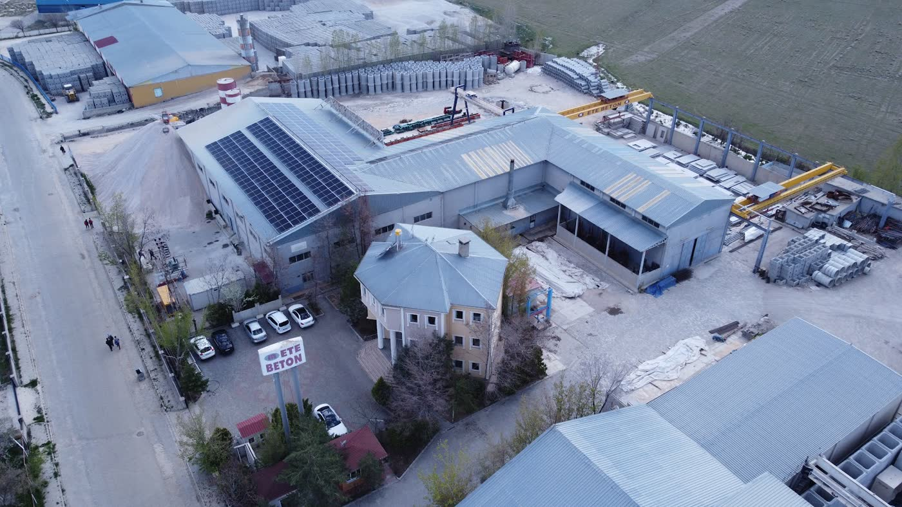
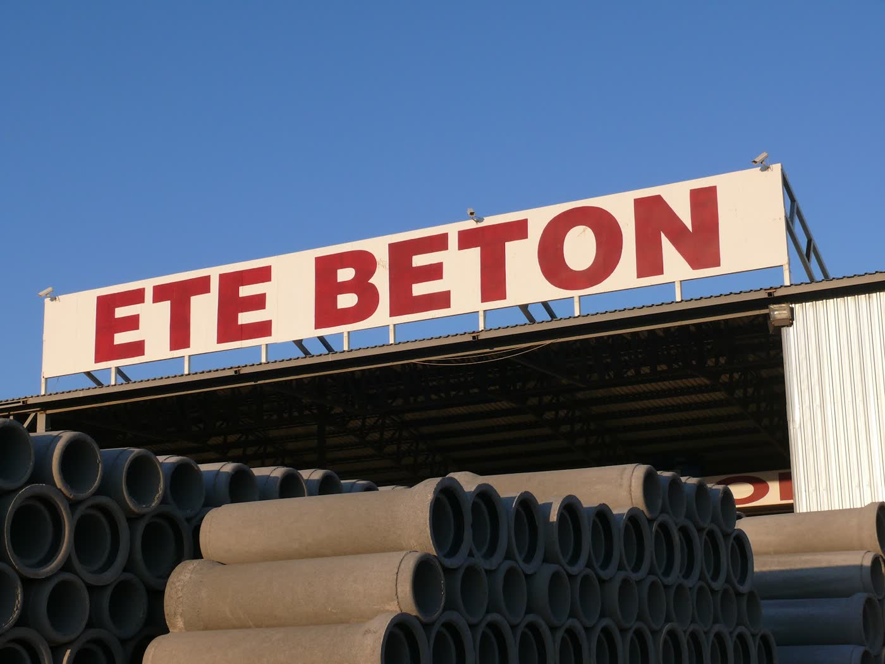

Bir bakışta
ama ayda 1–2 paylaşım
(asıl B2B müşteri burada)
açılış 48,7 sn
ama sadece 14 yorum



Fotoğraflar: Ete Beton'un Google profilinden.
Bulgular
Sitedeki Instagram düğmesi @eteinsaat hesabına, YouTube düğmesi @eteprecast kanalına gidiyor. 21 bin takipçili asıl Instagram hesabı ve YouTube kanalı ise @etebetonprefabrik. Siteye gelen ziyaretçi asıl hesapları bulamıyor.
Tüm bağlantılar asıl hesaplara çevrilmeli (10 dakikalık iş, ilk gün yapılır).
Google'ın mobil hız testinde 39/100; ana içerik 48,7 saniyede görünüyor. Şantiyeden telefonla bakan müşteri ve mühendis sayfa açılmadan çıkıyor; Google da yavaş siteyi aşağıya itiyor.
Görseller WebP'ye çevrilip sıkıştırılmalı, sayfa önbelleklenmeli; hedef 3 saniyenin altı.
Sekme başlığı sadece "Ete Beton". "Prefabrik fabrika binası", "prekast çift duvar", "prefabrik okul / hastane" arayan biri sizi bulamıyor. Sayfada H1 başlığı ve Google'ın adres/telefon okuyacağı işletme verisi yok; robots.txt yok.
Her ürün ve hizmet sayfasına arama odaklı başlık, açıklama ve yapısal veri; "prefabrik + şehir" sayfaları.
Haritada "Ara" düğmesi çıkmıyor. ★4,9 çok iyi ama sadece 14 yorum var, sonuncusu 301 gün önce gelmiş. Profil "Genel inşaat işleri" kategorisinde.
Telefon ve doğru kategori ("Prefabrik yapı üreticisi") eklenmeli; teslim edilen her projeden sonra yorum isteği gönderilmeli.
Instagram'da son paylaşımlar 15 Eylül, 7 Eylül, 28 Temmuz, 3 Temmuz, 20 Haziran; yani ayda 1–2 gönderi. Montaj, fabrika, deprem dayanımı, Kalyon Holding iş birliği gibi çok değerli içerikler var ama ritim olmadığı için algoritma hesabı göstermiyor. X (220 takipçi) ve YouTube (790 abone) ise geride kalmış; aynı videolar oralara düzenli gitmiyor.
Haftada 3 Reels + LinkedIn'de haftada 2 B2B gönderi + YouTube Shorts; aynı çekimden 4 kanala içerik.
Sitede "teklif iste" için metrekare/yapı tipi gibi bilgileri toplayan bir form ya da 7/24 cevap veren asistan yok; gelen taleplerin kimde, hangi aşamada olduğu görünmüyor. Alt bilgi 2023'te kalmış.
Proje ön-teklif formu, WhatsApp yapay zekâ asistanı ve teklif takip paneli (CRM).
Site içerik olarak zengin (projeler, e-katalog, belgeler, bayiler, referanslar) · HTTPS ve mobil uyum var · WhatsApp ve tek dokunuşla arama var · Google puanı 4,9 · Instagram 21 bin takipçi · güçlü kurumsal hikâye (1987, Kalyon iş birliği, deprem dayanımı).
Neler yapabiliriz?
🎬 İçerik fabrikası
Fabrikanızdan gelen ham çekimleri (telefonla bile) profesyonel Reels'e çeviriyoruz:
- "Bir binanın 7 günde yükselişi" montaj timelapse'leri
- Deprem dayanım testleri, mühendis anlatımlı kısa bilgi videoları
- Proje teslim hikâyeleri: okul, hastane, fabrika
- "Prefabrik mi betonarme mi?" gibi soru-cevap serileri
- Yapay zekâ ile Türkçe seslendirme ve altyazı
💼 LinkedIn ile B2B müşteri
Asıl alıcılarınız (müteahhitler, yatırımcılar, kamu ve sanayi) LinkedIn'de:
- Haftada 2 profesyonel gönderi: proje vaka çalışmaları, teknik içerik
- Yönetici profilleri için düşünce liderliği yazıları
- İK ve işveren markası (mühendis ve usta bulmak kolaylaşır)
⚡ Site: hızlı, aranır, teklif toplayan
- Açılış 48 sn → 3 sn altı; doğru sosyal bağlantılar
- "Ön teklif hesaplayıcı": yapı tipi, metrekare, şehir → talep size düşer
- Tamamlanan projeler Türkiye haritası
- "Prefabrik + şehir" ve ürün bazlı arama sayfaları
- İsteğe bağlı İngilizce / Arapça / Farsça sürüm (bölge ihracatı)
🧊 Sektörde fark yaratacak sistem: Ete Platform
Ziyaretçi binasının ölçülerini girer, 3D simülatörde prekast panellerin kat kat oturduğunu izler, duvar/döşeme metrajını ve sevkiyatı görür, tek tuşla teklif ister. Her müşteriye proje portalı (üretim %, sevkiyat, şantiye fotoğrafları, belgeler); bayilere stok ve sipariş portalı; mimarlara DWG/BIM doküman merkezi. Canlı örnekler: simülatör · müşteri portalı · bayi portalı.
🤖 Teklif takibi ve 7/24 asistan
- WhatsApp ve sitede ürün, teslim süresi, nakliye sorularını cevaplayan yapay zekâ asistanı
- Gelen her talep panele düşer: kim, hangi proje, kaç m², hangi aşamada
- Teklif gönderildikten 3 ve 7 gün sonra otomatik takip hatırlatması
- Proje tesliminden sonra Google yorum isteği
Örnek: ilk ayın içerik takvimi
| Hafta | Instagram / YouTube Shorts | |
|---|---|---|
| 1 | Fabrika havadan tanıtım · "1987'den bugüne" · bir çift duvar elemanının üretimi | Kurumsal tanıtım + Kalyon iş birliği · ürün gamı |
| 2 | Montaj timelapse · "Prefabrik deprem anında nasıl davranır?" · usta röportajı | Vaka: tamamlanan okul/hastane projesi · teknik makale |
| 3 | Nakliye ve şantiye · müşteri teşekkür videosu · soru-cevap: maliyet ve süre | Mühendis bakışı: prekast çift duvar avantajları · iş ilanı |
| 4 | Ay özeti · fuar/ziyaret · "Siz hayal edin, biz üretelim" hikâyesi | Ay özeti + gelecek projeler · yönetici yazısı |
Çekimler fabrikada sizin ekibin telefonuyla yapılabilir; neyi nasıl çekeceklerini her hafta listeyle gönderiyoruz.
Teklifimiz
★ Ete Platform (önerilen)
- Yeni site (Platform tasarımı)
- 3D prekast simülatörü
- Proje Sihirbazı + proje haritası
- Doküman merkezi (katalog, DWG, BIM)
- Hız, SEO, Google profili, doğru sosyal bağlantılar
- Teklif takip paneli (CRM) + otomatik hatırlatmalar
- Müşteri proje portalı (her projeye özel link, WhatsApp bildirimleri)
- Bayi / altyapı portalı (stok, sipariş, sevkiyat)
- Kataloglarla eğitilmiş 7/24 yapay zekâ asistanı (site + WhatsApp)
- İngilizce sürüm (isteğe bağlı Arapça / Farsça)
- Ekip eğitimi + 3 ay yoğun destek
Sosyal Medya Yönetimi
- Ayda 12 Reels/Shorts + 8 LinkedIn gönderisi
- Kurgu, altyazı, seslendirme, metin, kapak
- Aylık içerik takvimi, çekim listesi, rapor
- Platform ile birlikte alınırsa 19.900 TL / ay
Başlangıç seçenekleri
- 19.900 TL: Hızlı düzeltme + Google (bağlantılar, hız, SEO, Google profili, yorum QR)
- 49.900 TL + 2.490 TL/ay: Klasik site (3 tasarımdan biri) + Proje Sihirbazı + teklif takip paneli + WhatsApp asistanı
- Sonradan Platform'a geçişte ödenen tutar düşülür
Kurulumlarda ödeme: %40 başlangıç, %30 Faz 1 teslimi, %30 proje sonu. Tüm hesaplar, alan adı, kaynak kodu ve içerikler Ete Beton'a aittir. Sayfalardaki örnek talepler, stoklar, proje durumları ve tutarlar temsilîdir.
WhatsApp'tan yazınTüm paketi gör →